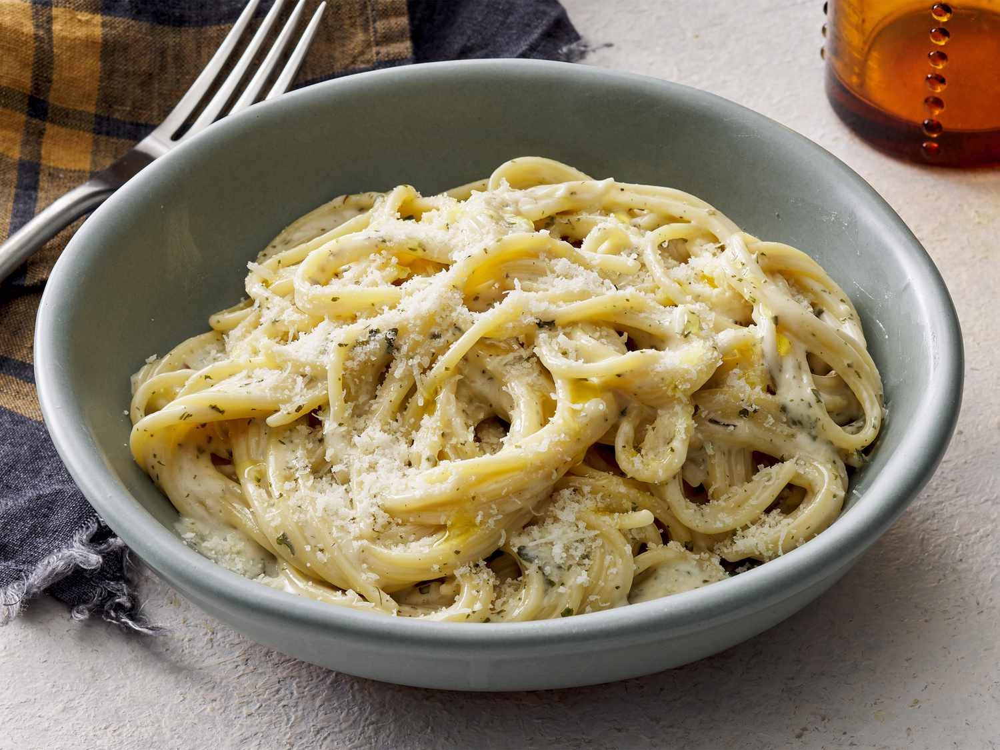

Pasta
Home

Description
This creamy garlic Parmesan pasta is a rich and comforting dish made with tender spaghetti coated in a smooth, creamy sauce. The pasta is seasoned with garlic, herbs, and black pepper, then topped with plenty of freshly grated Parmesan cheese for a savory, cheesy flavor. It is simple to prepare
and makes a delicious, satisfying meal that can be enjoyed on its own or paired with chicken, shrimp, or vegetables.
Ingredients
- Spaghetti
- Heavy cream
- Parmesan cheese
- Garlic
- Butter
- Olive oil
- Salt
- Black pepper
- Italian seasoning
- Fresh parsley
Steps
- Boil a large pot of salted water and cook the spaghetti until tender Drain and set aside
- Melt butter with olive oil in a large pan over medium heat
- Add minced garlic and cook for about 1-2 minutes until fragrant
- Pour in the heavy cream and stir well. Let it simmer gently for a few minutes
- Add parmesan cheese and stir until it melts and the sauce becomes creamy
- Season with salt, black pepper, and Italian seasoning
- Add the cooked spaghetti to the sauce and toss until the pasta is evenly coated
- Sprinkle with extra parmesan cheese and fresh parsley
- Serve immediately and enjoy!